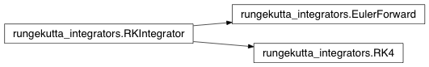

Runge-Kutta integrators¶
Simple (explicit) Runge-Kutta integrators to forward integrate dynamic forward models
-
class
rungekutta_integrators.RKIntegrator(f, u, pars, params)[source]¶ Abstract base class for Runge-Kutta integration: x’ = f(x(t),u(t),t)
-
nrOfTimeSteps= None¶ number of time steps for the integration
-
f= None¶ Function to be integrated
-
pars= None¶ parameters for the integrator
-
u= None¶ input for integration
-
set_number_of_time_steps(nr)[source]¶ Sets the number of time-steps for the integration
Parameters: nr – number of timesteps
-
get_number_of_time_steps()[source]¶ Returns the number of time steps that are used for the integration
Returns: nuber of time steps
-